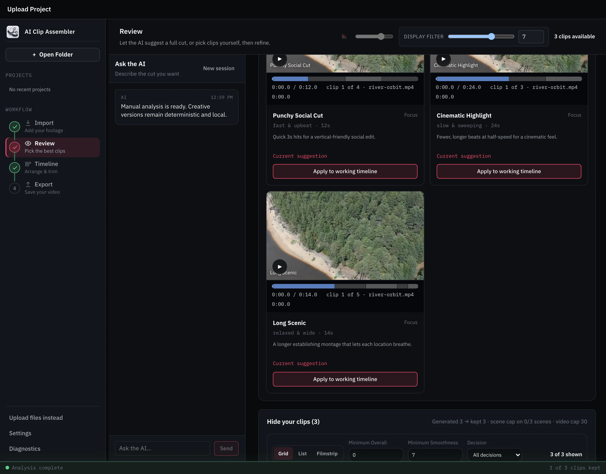
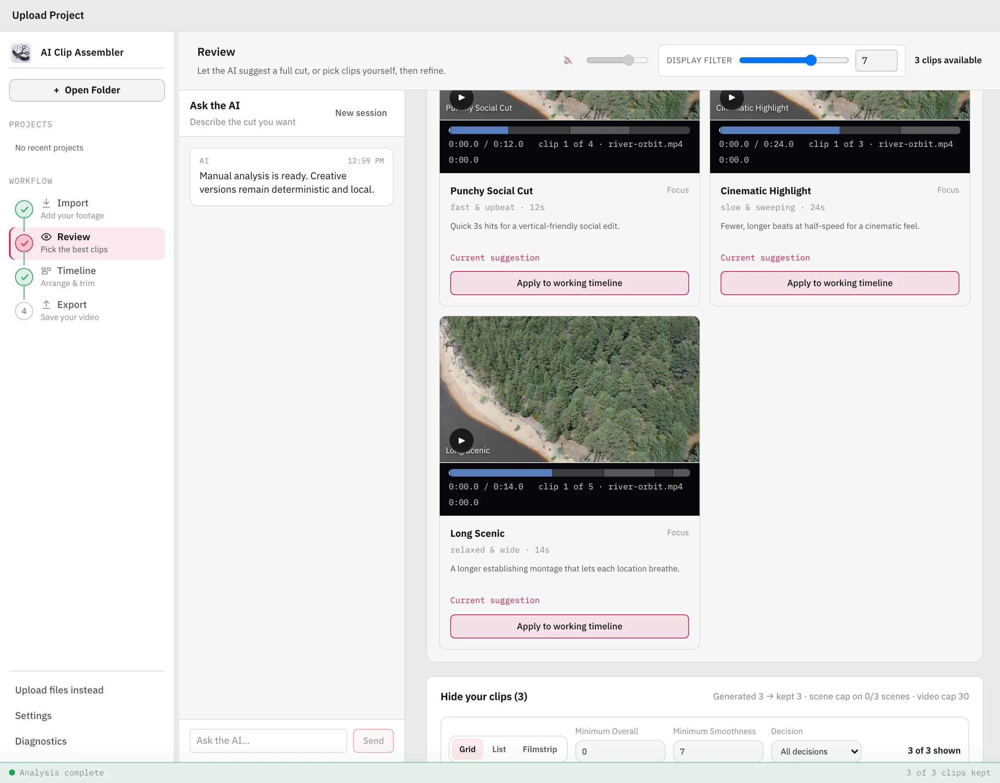

Drop in the raw files
Point it at a folder of MP4/MOV files. Each video is probed for duration, frame rate, and codec, then analyzed for stable, interesting moments — scene by scene, on your own hardware.
AI Clip Assembler is a free, local-first macOS app that scores raw footage for sharpness, motion stability, and exposure, then exports an editable FCPXML, DaVinci Resolve XML, or EDL timeline.
Point it at a folder of MP4/MOV files. Each video is probed for duration, frame rate, and codec, then analyzed for stable, interesting moments — scene by scene, on your own hardware.
Every candidate arrives with scores and a reason. Include the keepers, exclude the rest, then ask the optional AI agent for editable versions and apply one to the Timeline.
Export a real, editable timeline — DaVinci Resolve XML, Final Cut Pro FCPXML, or plain EDL — with media paths that survive moving the project folder.


Not a setting buried in preferences — an architecture decision, recorded and enforced in the codebase.
Analysis, scoring, and playback run entirely on your Mac. Provider-backed AI harnesses are opt-in per project, with explicit consent before they send sampled frames or metadata — or use the rule-based mode with no AI at all.
Already talk to Claude Desktop or Codex? Connect it in Settings and ask it to review candidates or edit your timeline. Its edits appear live in the app — and every one is undoable. Anything the external assistant reads, including frames you ask it to view, follows that provider's privacy policy.
The whole app — backend, UI, and the architecture decisions behind it — is on GitHub. Read the code that enforces local defaults and project-scoped consent for provider-backed harnesses.
No, not by default. The Manual Harness — the default for every project — scores footage locally with rule-based analysis and never sends it anywhere. Provider-backed AI harnesses are optional: they only run after you save explicit, per-project consent, and only then send sampled frames or clip metadata to the provider you configure. Separately, if you connect an external AI assistant and ask it to inspect frames or metadata, that material is handled under the external provider's privacy policy.
Final Cut Pro (FCPXML), DaVinci Resolve (Resolve XML), and any editor that accepts EDL. FCPXML and Resolve XML preserve per-clip Speed and Transform edits; EDL deliberately flattens Speed and Transform and the export surfaces a warning so you know what to reapply.
Separate Apple Silicon and Intel DMGs are published. They bundle the Python backend and a private FFmpeg runtime, so no separate Python, Homebrew, or terminal setup is required. The current builds are unsigned, so macOS may show a Gatekeeper warning on first launch; clean-machine verification is still in progress.
Yes. AI Clip Assembler is free to download and released under the MIT License, with the full backend, UI, and architecture decisions on GitHub.
Free and open source. Drop in a folder of clips and see what it finds.
Apple Silicon & Intel · local by default · cloud AI is opt-in per project